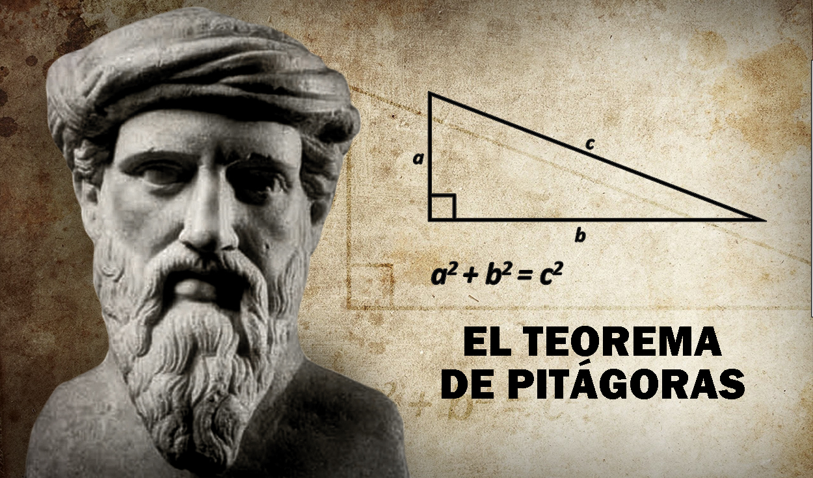
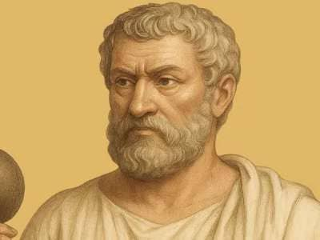

___________________________________________________
TEOREMA DE PITAGORAS
___________________________________________________
TEOREMA DE TALES
| Característica | Teorema de Tales | Teorema de Pitágoras |
|---|---|---|
| Concepto | Proporcionalidad y semejanza de triángulos | Relación entre los lados de un triángulo rectángulo |
| Fórmula básica | A / a = B / b | a² + b² = c² |
| En que se aplica | Triángulos cortados por líneas paralelas | Únicamente triángulos rectángulos (90°) |
| Uso principal | Calcular alturas y distancias inaccesibles mediante sombras | Calcular la distancia en diagonal o el lado faltante |